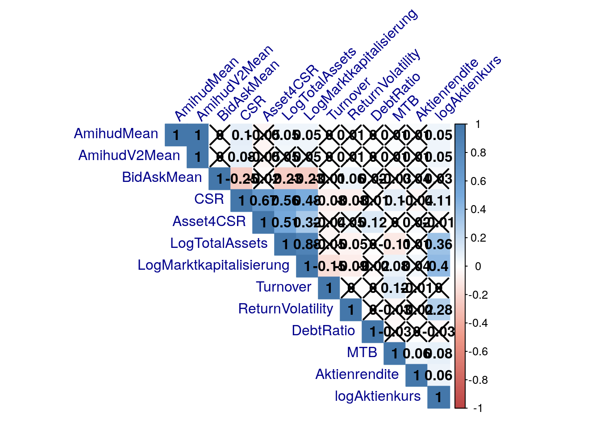
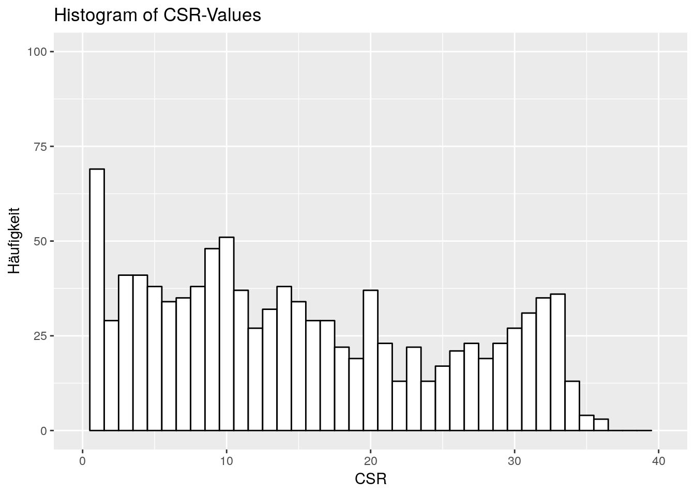
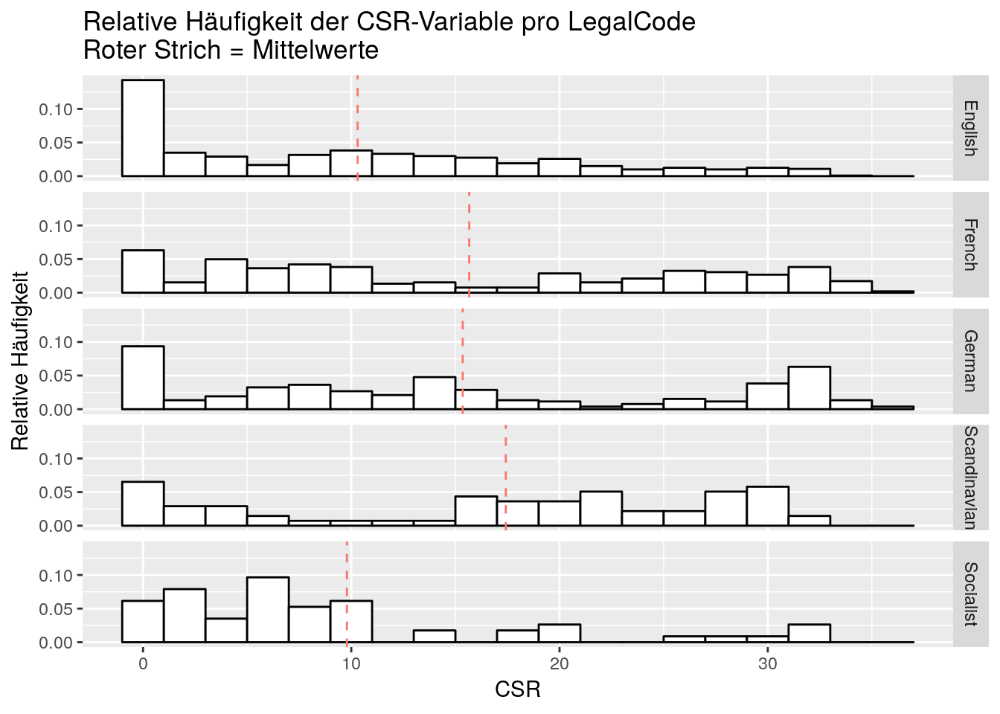
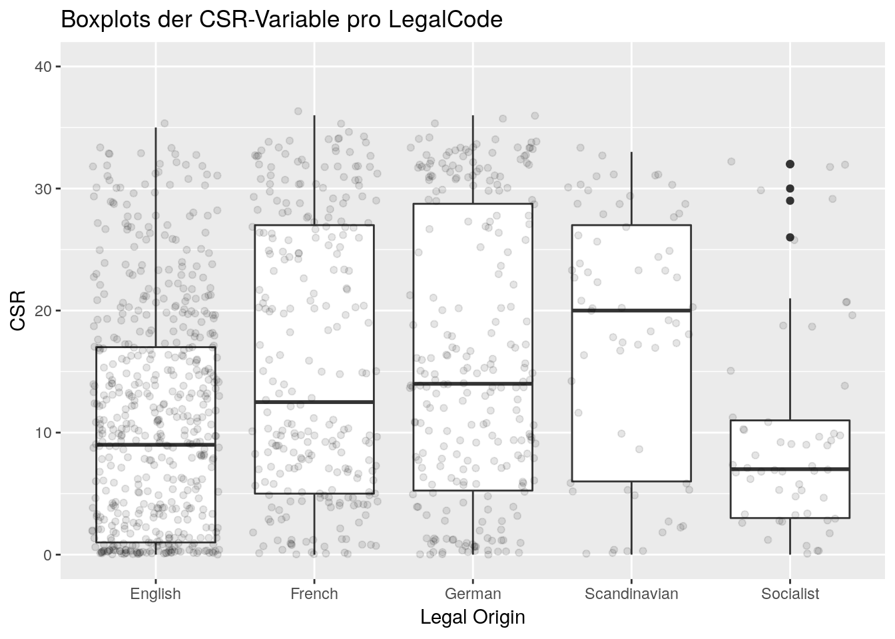

Für Firas :)
Die Deskriptiven Statistiken
## AmihudMean AmihudV2Mean BidAskMean CSR Asset4CSR
## nbr.val 1481.00 1481.0000 1481.0000 1252.00 730.00
## nbr.null 1.00 1.0000 5.0000 201.00 0.00
## nbr.na 345.00 345.0000 345.0000 574.00 1096.00
## min -1340000.00 -27700.0000 -0.1440 0.00 3.30
## max 0.00 0.0000 1.5300 36.00 97.68
## range 1340000.00 27700.0000 1.6740 36.00 94.38
## sum -1659711.54 -32187.2827 21.2943 16089.00 41531.12
## median -0.58 -0.0058 0.0042 11.00 63.90
## mean -1120.67 -21.7335 0.0144 12.85 56.89
## SE.mean 905.39 18.7195 0.0014 0.31 1.19
## CI.mean.0.95 1775.99 36.7195 0.0028 0.60 2.33
## var 1214032562.42 518968.8547 0.0030 117.96 1025.55
## std.dev 34842.97 720.3949 0.0546 10.86 32.02
## coef.var -31.09 -33.1468 3.7972 0.85 0.56
## LogTotalAssets LogMarktkapitalisierung Turnover
## nbr.val 1682.000 1556.000 1525.00
## nbr.null 0.000 0.000 2.00
## nbr.na 144.000 270.000 301.00
## min 17.000 13.248 0.00
## max 28.972 26.098 3053.62
## range 11.973 12.850 3053.62
## sum 38777.033 33277.559 7159.00
## median 22.928 21.478 0.49
## mean 23.054 21.387 4.69
## SE.mean 0.056 0.047 2.70
## CI.mean.0.95 0.110 0.092 5.29
## var 5.296 3.447 11093.49
## std.dev 2.301 1.857 105.33
## coef.var 0.100 0.087 22.44
## ReturnVolatility DebtRatio MTB Aktienrendite
## nbr.val 1479.00000 1679.000 1495.000 1463.000
## nbr.null 0.00000 353.000 1.000 11.000
## nbr.na 347.00000 147.000 331.000 363.000
## min 0.00062 0.000 0.000 -0.999
## max 516.19796 32.495 18.580 122.794
## range 516.19734 32.495 18.580 123.793
## sum 2845.08306 123.896 2484.730 658.060
## median 0.19421 0.029 1.290 0.073
## mean 1.92365 0.074 1.662 0.450
## SE.mean 0.42260 0.019 0.036 0.112
## CI.mean.0.95 0.82896 0.038 0.071 0.220
## var 264.13468 0.634 1.982 18.382
## std.dev 16.25222 0.796 1.408 4.287
## coef.var 8.44862 10.790 0.847 9.532
## logAktienkurs
## nbr.val 1567.000
## nbr.null 1.000
## nbr.na 259.000
## min -4.605
## max 9.401
## range 14.006
## sum 3391.451
## median 2.271
## mean 2.164
## SE.mean 0.050
## CI.mean.0.95 0.098
## var 3.924
## std.dev 1.981
## coef.var 0.915Korrelationen als Grafik und Matrix

## The Correlations:## AmihudMean AmihudV2Mean BidAskMean CSR
## AmihudMean 1.0000 0.9999 0.0012 0.096
## AmihudV2Mean 0.9999 1.0000 0.0027 0.081
## BidAskMean 0.0012 0.0027 1.0000 -0.246
## CSR 0.0960 0.0813 -0.2457 1.000
## Asset4CSR -0.0478 -0.0476 -0.0236 0.666
## LogTotalAssets 0.0516 0.0498 -0.2302 0.560
## LogMarktkapitalisierung 0.0532 0.0509 -0.2335 0.484
## Turnover 0.0015 0.0014 -0.0055 -0.075
## ReturnVolatility 0.0119 0.0078 0.0649 -0.076
## DebtRatio 0.0025 0.0025 0.0208 -0.015
## MTB 0.0105 0.0102 -0.0275 0.100
## Aktienrendite 0.0115 0.0125 0.0357 -0.044
## logAktienkurs 0.0530 0.0525 0.0274 0.108
## Asset4CSR LogTotalAssets LogMarktkapitalisierung
## AmihudMean -0.0478 0.051632 0.053
## AmihudV2Mean -0.0476 0.049784 0.051
## BidAskMean -0.0236 -0.230177 -0.234
## CSR 0.6660 0.560002 0.484
## Asset4CSR 1.0000 0.510526 0.320
## LogTotalAssets 0.5105 1.000000 0.879
## LogMarktkapitalisierung 0.3196 0.878850 1.000
## Turnover -0.0410 -0.049703 -0.150
## ReturnVolatility 0.0493 -0.054798 -0.085
## DebtRatio 0.1246 -0.000071 -0.023
## MTB 0.0021 -0.107086 0.079
## Aktienrendite 0.0228 0.008447 0.042
## logAktienkurs -0.0108 0.355341 0.405
## Turnover ReturnVolatility DebtRatio MTB
## AmihudMean 0.0015 0.01187 0.002511 0.0105
## AmihudV2Mean 0.0014 0.00778 0.002496 0.0102
## BidAskMean -0.0055 0.06489 0.020756 -0.0275
## CSR -0.0753 -0.07587 -0.014971 0.0996
## Asset4CSR -0.0410 0.04931 0.124622 0.0021
## LogTotalAssets -0.0497 -0.05480 -0.000071 -0.1071
## LogMarktkapitalisierung -0.1504 -0.08505 -0.022528 0.0790
## Turnover 1.0000 -0.00205 -0.001570 0.1207
## ReturnVolatility -0.0021 1.00000 0.000242 -0.0330
## DebtRatio -0.0016 0.00024 1.000000 -0.0272
## MTB 0.1207 -0.03298 -0.027207 1.0000
## Aktienrendite -0.0069 -0.01627 0.000478 0.0557
## logAktienkurs 0.0020 0.27925 -0.028891 0.0842
## Aktienrendite logAktienkurs
## AmihudMean 0.01154 0.053
## AmihudV2Mean 0.01245 0.052
## BidAskMean 0.03566 0.027
## CSR -0.04418 0.108
## Asset4CSR 0.02280 -0.011
## LogTotalAssets 0.00845 0.355
## LogMarktkapitalisierung 0.04173 0.405
## Turnover -0.00688 0.002
## ReturnVolatility -0.01627 0.279
## DebtRatio 0.00048 -0.029
## MTB 0.05569 0.084
## Aktienrendite 1.00000 0.061
## logAktienkurs 0.06112 1.000## The p-Values:## AmihudMean AmihudV2Mean BidAskMean CSR
## AmihudMean NA 0.0000 0.965 0.00111
## AmihudV2Mean 0.0000 NA 0.917 0.00579
## BidAskMean 0.9646 0.9170 NA 0.00000
## CSR 0.0011 0.0058 0.000 NA
## Asset4CSR 0.2019 0.2047 0.529 0.00000
## LogTotalAssets 0.0485 0.0571 0.000 0.00000
## LogMarktkapitalisierung 0.0426 0.0522 0.000 0.00000
## Turnover 0.9558 0.9583 0.835 0.01087
## ReturnVolatility 0.6541 0.7691 0.014 0.00907
## DebtRatio 0.9237 0.9241 0.428 0.60288
## MTB 0.6935 0.7020 0.302 0.00086
## Aktienrendite 0.6672 0.6427 0.184 0.14111
## logAktienkurs 0.0430 0.0450 0.295 0.00021
## Asset4CSR LogTotalAssets LogMarktkapitalisierung
## AmihudMean 0.20195 0.048477 0.0425663126
## AmihudV2Mean 0.20473 0.057111 0.0522282767
## BidAskMean 0.52922 0.000000 0.0000000000
## CSR 0.00000 0.000000 0.0000000000
## Asset4CSR NA 0.000000 0.0000000000
## LogTotalAssets 0.00000 NA 0.0000000000
## LogMarktkapitalisierung 0.00000 0.000000 NA
## Turnover 0.27312 0.052309 0.0000000039
## ReturnVolatility 0.19672 0.037006 0.0012403787
## DebtRatio 0.00075 0.997666 0.3749698265
## MTB 0.95688 0.000034 0.0023165376
## Aktienrendite 0.54709 0.747073 0.1114500580
## logAktienkurs 0.77290 0.000000 0.0000000000
## Turnover ReturnVolatility DebtRatio MTB
## AmihudMean 0.9557776375 0.6541 0.92367 0.693466
## AmihudV2Mean 0.9583010443 0.7691 0.92414 0.702028
## BidAskMean 0.8348153708 0.0143 0.42839 0.302461
## CSR 0.0108687850 0.0091 0.60288 0.000860
## Asset4CSR 0.2731189899 0.1967 0.00075 0.956880
## LogTotalAssets 0.0523089171 0.0370 0.99767 0.000034
## LogMarktkapitalisierung 0.0000000039 0.0012 0.37497 0.002317
## Turnover NA 0.9383 0.95121 0.000003
## ReturnVolatility 0.9383384893 NA 0.99266 0.218861
## DebtRatio 0.9512135357 0.9927 NA 0.293939
## MTB 0.0000030276 0.2189 0.29394 NA
## Aktienrendite 0.7933731133 0.5470 0.98545 0.035417
## logAktienkurs 0.9365882767 0.0000 0.25890 0.001123
## Aktienrendite logAktienkurs
## AmihudMean 0.667 0.04300
## AmihudV2Mean 0.643 0.04503
## BidAskMean 0.184 0.29482
## CSR 0.141 0.00021
## Asset4CSR 0.547 0.77290
## LogTotalAssets 0.747 0.00000
## LogMarktkapitalisierung 0.111 0.00000
## Turnover 0.793 0.93659
## ReturnVolatility 0.547 0.00000
## DebtRatio 0.985 0.25890
## MTB 0.035 0.00112
## Aktienrendite NA 0.01940
## logAktienkurs 0.019 NA## The pairwise number of observations:## AmihudMean AmihudV2Mean BidAskMean CSR Asset4CSR
## AmihudMean 1481 1481 1481 1151 713
## AmihudV2Mean 1481 1481 1481 1151 713
## BidAskMean 1481 1481 1481 1151 713
## CSR 1151 1151 1151 1252 626
## Asset4CSR 713 713 713 626 730
## LogTotalAssets 1461 1461 1461 1213 728
## LogMarktkapitalisierung 1455 1455 1455 1161 724
## Turnover 1439 1439 1439 1144 715
## ReturnVolatility 1426 1426 1426 1182 687
## DebtRatio 1458 1458 1458 1210 728
## MTB 1410 1410 1410 1117 692
## Aktienrendite 1390 1390 1390 1111 700
## logAktienkurs 1459 1459 1459 1165 717
## LogTotalAssets LogMarktkapitalisierung Turnover
## AmihudMean 1461 1455 1439
## AmihudV2Mean 1461 1455 1439
## BidAskMean 1461 1455 1439
## CSR 1213 1161 1144
## Asset4CSR 728 724 715
## LogTotalAssets 1682 1556 1525
## LogMarktkapitalisierung 1556 1556 1517
## Turnover 1525 1517 1525
## ReturnVolatility 1449 1439 1421
## DebtRatio 1679 1553 1522
## MTB 1493 1484 1487
## Aktienrendite 1460 1456 1454
## logAktienkurs 1532 1523 1525
## ReturnVolatility DebtRatio MTB Aktienrendite
## AmihudMean 1426 1458 1410 1390
## AmihudV2Mean 1426 1458 1410 1390
## BidAskMean 1426 1458 1410 1390
## CSR 1182 1210 1117 1111
## Asset4CSR 687 728 692 700
## LogTotalAssets 1449 1679 1493 1460
## LogMarktkapitalisierung 1439 1553 1484 1456
## Turnover 1421 1522 1487 1454
## ReturnVolatility 1479 1446 1392 1373
## DebtRatio 1446 1679 1490 1457
## MTB 1392 1490 1495 1427
## Aktienrendite 1373 1457 1427 1463
## logAktienkurs 1457 1529 1495 1463
## logAktienkurs
## AmihudMean 1459
## AmihudV2Mean 1459
## BidAskMean 1459
## CSR 1165
## Asset4CSR 717
## LogTotalAssets 1532
## LogMarktkapitalisierung 1523
## Turnover 1525
## ReturnVolatility 1457
## DebtRatio 1529
## MTB 1495
## Aktienrendite 1463
## logAktienkurs 1567Die Verteilung von CSR
## The Statistics of CSR:## min Q1 median Q3 max mean sd n missing
## 0 3 11 21 36 13 11 1252 574
Die Verteilung der IV-Variable
## Tabelle der LegalCodeOrigin-Häufigkeiten##
## English French German Scandinavian Socialist
## 847 407 418 77 77
Die Verteilung von CSR per LegalCode
## Deskriptive Statistiken der CSR-Variable pro LegalCode:## LegalOrigin min Q1 median Q3 max mean sd n missing
## 1 English 0 1.0 9 17 35 10.3 9.6 602 245
## 2 French 0 5.0 12 27 36 15.7 11.4 262 145
## 3 German 0 5.2 14 29 36 15.4 11.8 262 156
## 4 Scandinavian 0 6.0 20 27 33 17.4 10.9 69 8
## 5 Socialist 0 3.0 7 11 32 9.8 8.8 57 20